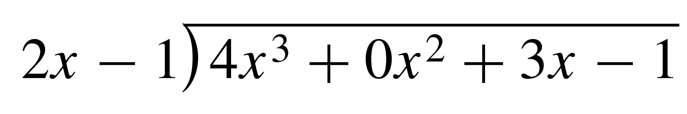

Numerical calculations often involve more than one operation. So that everyone agrees on how such expressions should be evaluated, we follow the order of operations.
Order of Operations
Simplify any expressions within grouping symbols (parentheses, brackets, square root bars, or fraction bars). Start with the innermost grouping symbols and work outward.
Evaluate all powers and roots.
Perform multiplications and divisions in order from left to right.
Perform additions and subtractions in order from left to right.
SubsectionParentheses and Fraction Bars
We can use parentheses to override the multiplication-first rule. Compare the two expressions below.
\begin{align*}
\amp\text{The sum of 4 times 6 and 10} \amp\amp 4 \cdot 6 + 10\\
\amp\text{4 times the sum of 6 and 10} \amp\amp 4(6 + 10)
\end{align*}
In the first expression, we perform the multiplication \(4\times 6\) first, but in the second expression we perform the addition \(6 + 10\) first, because it is enclosed in parentheses.
The location (or absence) of parentheses can drastically alter the meaning of an expression. In the following example, note how the location of the parentheses changes the value of the expression.
In the expression \(5 - 12^2\text{,}\) which appears in Example A.1, the exponent \(2\) applies only to \(12\text{,}\) not to \(-12\text{.}\) Thus, \(5 - 12^2 \ne 5 + 144\text{.}\)
The order of operations mentions other grouping devices besides parentheses: fraction bars and square root bars. Notice how the placement of the fraction bar affects the expressions in the next example.
(the mass of a hydrogen atom in grams). These numbers can be written in a more compact and useful form by using powers of \(10\text{.}\)
In our base \(10\) number system, multiplying a number by a positive power of \(10\) has the effect of moving the decimal place \(k\) places to the right, where \(k\) is the exponent in the power of \(10\text{.}\) For example,
Using this property, we can write any number as the product of a number between \(1\) and \(10\) (including \(1\)) and a power of \(10\text{.}\) For example, the mass of the Earth and the mass of a hydrogen atom can be expressed as
The average American eats \(110\) kilograms of meat per year. It takes about \(16\) kilograms of grain to produce \(1\) kilogram of meat, and advanced farming techniques can produce about \(6000\) kilograms of grain on each hectare of arable land. (The hectare is \(10,000\) square meters, or just under \(2 \frac{1}{2}\) acres.) Now, the total land area of the Earth is about \(13\) billion hectares, but only about \(11\%\) of that land is arable. Is it possible for each of the \(5.5\) billion people on Earth to eat as much meat as Americans do?
First we will compute the amount of meat necessary to feed every person on Earth \(110\) kilograms per year. There are \(5.5 \times 10^9\) people on Earth.
\begin{equation*}
(5.5\times 10^9 \text{ people})\times (110 \text{ kg/person}) = 6.05\times 10^{11} \text{ kg of meat}
\end{equation*}
Next we will compute the amount of grain needed to produce that much meat.
\begin{equation*}
(16 \text{ kg of grain/kg of meat})\times (6.05\times 10^{11} \text{ kg of meat}) = 9.68\times 10^{12} \text{ kg of grain}
\end{equation*}
Next we will see how many hectares of land are needed to produce that much grain.
\begin{equation*}
(9.68\times 10^{12} \text{ kg of grain})\div(6000 \text{ kg/hectare}) = 1.613\times 10^9 \text{ hectares}
\end{equation*}
Finally, we will compute the amount of arable land available for grain production.
Thus, even if we use every hectare of arable land to produce grain for livestock, we will not have enough to provide every person on Earth with \(110\) kilograms of meat per year.
SectionLinear Equations and Inequalities¶ permalink
An equation is just a mathematical statement that two expressions are equal. Equations relating two variables are particularly useful. If we know the value of one of the variables, we can find the corresponding value of the other variable by solving the equation.
ExampleA.7
The equation \(w = 6h\) gives Loren's wages, \(w\text{,}\) in terms of the number of hours she works, \(h\text{.}\) How many hours does Loren need to work next week if she wants to earn \(\$225\text{?}\)
We know that \(w = 225\text{,}\) and we would like to know the value of \(h\text{.}\) We substitute the value for \(w\) into our equation and then solve for \(h\text{.}\)
\begin{align*}
w \amp= 6h\amp\amp \text{Substitute 225 for }w.\\
\alert{225} \amp= 6h\amp\amp \text{Divide both sides by } 6.\\
\frac{225}{\alert{6}}\amp = \frac{6h}{\alert{6}}\amp\amp \text{Simplify.}\\
375.5\amp = h
\end{align*}
Loren must work \(37.5\) hours in order to earn \(\$225\text{.}\) In reality, Loren will probably have to work for \(38\) hours, because most employers do not pay for portions of an hour's work. Thus, Loren needs to work for \(38\) hours.
To solve an equation we can generate simpler equations that have the same solutions. Equations that have identical solutions are called equivalent equations. For example,
\begin{equation*}
3x - 5 = x + 3
\end{equation*}
and
\begin{equation*}
2x = 8
\end{equation*}
are equivalent equations because the solution of each equation is \(4\text{.}\) Often we can find simpler equivalent equations by undoing in reverse order the operations performed on the variable.
SubsectionSolving Linear Equations
Linear, or first-degree, equations can be written so that every term is either a constant or a constant times the variable. The equations above are examples of linear equations. Recall the following rules for solving linear equations.
To Generate Equivalent Equations
We can add or subtract the same number on both sides of an equation.
We can multiply or divide \(both\) sides of an equation by the \(same\) number (except zero).
Applying either of these rules produces a new equation equivalent to the old one and thus preserves the solution.We use the rules to isolate the variable on one side of the equation.
We first collect all the variable terms on one side of the equation, and the constant terms on the other side.
\begin{align*}
3x - 5 \alert{{}- x} \amp = x + 3 \alert{{}- x}\amp\amp \text{Subtract }x \text{ from both sides.}\\
2x - 5 \amp = 3\amp\amp \text{Simplify.}\\
2x - 5 \alert{{}+ 5} \amp = 5 \alert{{}+ 5}\amp\amp \text{Add 5 to both sides.}\\
2x \amp = 8 \amp\amp\text{Simplify.}\\
\frac{2x}{\alert{2}}\amp =\frac{8}{\alert{2}}\amp\amp\text{Divide both sides by 2.}\\
x\amp = 4\amp\amp\text{Simplify.}
\end{align*}
The solution is \(4\text{.}\) (You can check the solution by substituting \(4\) into the original equation to show that a true statement results.)
The following steps should enable you to solve any linear equation. Of course, you may not need all the steps for a particular equation.
To Solve a Linear Equation:
Simplify each side of the equation separately.
Apply the distributive law to remove parentheses.
Collect like terms.
By adding or subtracting appropriate terms to both sides of the equation, get all the variable terms on one side and all the constant terms on the other.
Divide both sides of the equation by the coefficient of the variable.
Finally, we divide both sides of the equation by the coefficient of the variable.
\begin{align*}
-3x \amp= 9 \amp\amp\text{Divide both sides by }-3.\\
x \amp =-3
\end{align*}
The solution is \(-3\text{.}\)
SubsectionFormulas
A formula is an equation that relates several variables. For example, the equation
\begin{equation*}
P = 2l + 2w
\end{equation*}
gives the perimeter of a rectangle in terms of its length and width.
Suppose we have some wire fence to enclose an exercise area for rabbits, and we would like to see what dimensions are possible for different rectangles with that perimeter. In this case, it would be more useful to have a formula for the length of the rectangle in terms of its perimeter and its width. We can find such a formula by solving the perimeter formula for \(l\) in terms of \(P\) and \(w\text{.}\)
\begin{align*}
2l + 2w \amp= P \amp\amp\text{Subtact }2 w \text{ from both sides.}\\
2l \amp= P - 2w \amp\amp\text{Divide both sides by 2.}\\
l \amp= \frac{P - 2w}{2}
\end{align*}
The result is a new formula that gives the length of a rectangle in terms of its perimeter and its width.
ExampleA.10
The formula \(5F = 9C + 160\) relates the temperature in degrees Fahrenheit, \(F\text{,}\) to the temperature in degrees Celsius, \(C\text{.}\) Solve the formula for \(C\) in terms of \(F\text{.}\)
\begin{align*}
3x - 5y \amp = 40\amp\amp\text{Subtract }3x \text{ from both sides.}\\
-5y \amp = 40 - 3x\amp\amp\text{Divide both sides by }-5.\\
\frac{-5y}{-5} \amp = \frac{40 - 3x}{-5}\amp\amp\text{Simplify both sides.} \\
y \amp = -8 + \frac{3}{5}x
\end{align*}
SubsectionLinear Inequalities
The symbol \(\gt\) is called an inequality symbol, and the statement \(a\gt b\) is called an inequality. There are four inequality symbols:
\begin{align*}
\amp\gt \amp\amp\text{is greater than}\\
\amp\lt \amp\amp\text{is less than}\\
\amp\ge \amp\amp\text{is greater than or equal to}\\
\amp\le \amp\amp\text{is less than or equal to}
\end{align*}
Inequalities that include the symbols \(\gt\) or \(\le\) are called strict inequalities; those that include \(\ge\) or \(\le\) are called nonstrict.
If we multiply or divide both sides of an inequality by a negative number, the direction of the inequality must be reversed. For example, if we multiply both sides of the inequality
\begin{equation*}
2\lt 5
\end{equation*}
by \(-3\text{,}\) we get
\begin{align*}
\alert{-3}(2) \amp\gt \alert{-3}(5)\amp\amp \text{Change inequality symbol from }\lt \text{ to }\gt.\\
-6 \amp\gt -15.
\end{align*}
Because of this property, the rules for solving linear equations must be revised slightly for solving linear inequalities.
To Solve a Linear Inequality:
We may add or subtract the same number to both sides of an inequality without changing its solutions.
We may multiply or divide both sides of an inequality by a positive number without changing its solutions.
If we multiply or divide both sides of an inequality by a negative number, we must reverse the direction of the inequality symbol.
Use the rules above to isolate \(x\) on one side of the inequality.
\begin{align*}
4 - 3x \amp\ge -17\amp\amp\text{Subtract 4 from both sides.}\\
-3x \amp\ge -21\amp\amp\text{Divide both sides by }-3.\\
x \amp\le 7
\end{align*}
Notice that we reversed the direction of the inequality when we divided by \(-3\text{.}\) Any number less than or equal to \(7\) is a solution of the inequality.
A compound inequality involves two inequality symbols.
The solutions are all numbers between \(-2\) and \(2\text{,}\) inclusive.
SubsectionInterval Notation
The solutions of the inequality in Example A.13 form an interval. An interval is a set that consists of all the real numbers between two numbers \(a\) and \(b\text{.}\)
The set \(-2 \le x \le 2\) includes its endpoints \(-2\) and \(2\text{,}\) so we call it a closed interval, and we denote it by \([-2, 2]\) (see Figure A.14a). The square brackets tell us that the endpoints are included in the interval. An interval that does not include its endpoints, such as \(-2 \lt x \lt 2\text{,}\) is called an open interval, and we denote it with round brackets, \((-2, 2)\) (see Figure A.14b). FigureA.14
CautionA.15
Do not confuse the open interval \((-2, 2)\) with the point \((-2, 2)\text{!}\) The notation is the same, so you must decide from the context whether an interval or a point is being discussed.
We can also discuss infinite intervals, such as \(x\lt 3\) and \(x\ge -1\text{,}\) shown in Figure A.16. We denote the interval \(x\lt 3\) by \((-\infty, 3)\text{,}\) and the interval \(x\ge -1\) by \([-1, \infty)\text{.}\) The symbol \(\infty\text{,}\) for infinity, does not represent a specific real number; it indicates that the interval continues forever along the real line. FigureA.16
Finally, we can combine two or more intervals into a larger set. For example, the set consisting of \(x\lt -1\) or \(x\gt 2\text{,}\) shown in Figure A.17, is the union of two intervals and is denoted by \((-\infty,-2) \cup (2,\infty)\text{.}\) FigureA.17
Many solutions of inequalities are intervals or unions of intervals.
ExampleA.18
Write each of the solution sets with interval notation and graph the solution set on a number line.
\(3 \le x \lt 6\)
\(x \ge -9\)
\(x\le 1 ~~\text{ or }~~ x\gt 4\)
\(-8 \lt x \le -5 ~~\text{ or }~~ -1 \le x \lt 3\)
\([3, 6)\text{.}\) This is called a half-open or half-closed interval. (See Figure A.19.) FigureA.19
\([-9,\infty)\text{.}\) We always use round brackets next to the symbol \(\infty\) because \(\infty\) is not a specific number and is not included in the set. (See Figure A.20.) FigureA.20
\((-\infty, 1] \cup (4, \infty)\text{.}\) The word or describes the union of two sets. (See Figure A.21.) FigureA.21
\((-8,-5] \cup [-1, 3)\text{.}\) (See Figure A.22.) FigureA.22
SectionAlgebraic Expressions and Problem Solving¶ permalink
You are familiar with the use of letters, or variables, to stand for unknown numbers in equations or formulas. Variables are also used to represent numerical quantities that change over time or in different situations. For example, \(p\) might stand for the atmospheric pressure at different heights above the Earth's surface. Or \(N\) might represent the number of people infected with cholera \(t\) days after the start of an epidemic.
An algebraic expression is any meaningful combination of numbers, variables, and symbols of operation. Algebraic expressions are used to express relationships between variable quantities.
ExampleA.23
Loren makes \(\$6\) an hour working at the campus bookstore.
Choose a variable for the number of hours Loren works per week.
Write an algebraic expression for the amount of Loren's weekly earnings.
Let \(h\) stand for the number of hours Loren works per week.
The amount Loren earns is given by
\begin{equation*}
6\times (\text{number of hours Loren worked})
\end{equation*}
or \(6\cdot h\text{.}\) Loren's weekly earnings can be expressed as \(6h\text{.}\)
The algebraic expression \(6h\) represents the amount of money Loren earns in terms of the number of hours she works. If we substitute a specific value for the variable in an expression, we find a numerical value for the expression. This is called evaluating the expression.
ExampleA.24
If Loren from Example A.23 works for \(16\) hours in the bookstore this week, how much will she earn?
Let \(I\) represent April's total income for the week, and let \(S\) represent the total amount of her sales. We translate the information from the problem into mathematical language as follows:
\begin{gather*}
\text{Her income consists of }\$200 . . .\text{ plus }. . . 9\% \text{ of her sales} \\
I \hphantom{consists of}= \hphantom{of}200 \hphantom{plus+}+ \hphantom{....}0.09 \hphantom{of her}S
\end{gather*}
Thus, \(I = 200 + 0.09S\text{.}\)
We want to evaluate our expression from part (a) with \(S = 350\text{.}\) We substitute \(\alert{350}\) for \(S\) to find
\begin{equation*}
I = 200 + 0.09(\alert{350})
\end{equation*}
Following the order of operations, we perform the multiplication before the addition. Thus, we begin by computing \(0.09(350)\text{.}\)
The calculator will perform the operations in the correct order—multiplication first.
ExampleA.27
Economy Parcel Service charges \(\$2.80\) per pound to deliver a package from Pasadena to Cedar Rapids. Andrew wants to mail a painting that weighs \(8.3\) pounds, plus whatever packing material he uses.
Choose variables to represent the unknown quantities and write an expression for the cost of shipping Andrew's painting.
Find the shipping cost if Andrew uses \(2.9\) pounds of packing material.
Let \(C\) stand for the shipping cost and let \(w\) stand for the weight of the packing material. Andrew must find the total weight of his package first, then multiply by the shipping charge. The total weight of the package is \(8.3 + w\) pounds. We use parentheses around this expression to show that it should be computed first, and the sum should be multiplied by the shipping charge of \(\$2.80\) per pound. Thus,
\begin{equation*}
C = 2.80(8.3 + w)
\end{equation*}
Evaluate the formula from part (a) with \(w = \alert{2.9}\text{.}\)
The cost of shipping the painting is \(\$31.36\text{.}\)
RemarkA.28Calculator Tip
On a calculator, we enter the expression for \(C\) in the order it appears, including the parentheses. (Experiment to see whether your calculator requires you to enter the × symbol after 2.80.) The keying sequence
Problem solving often involves translating a real-life problem into a computer programming language, or, in our case, into algebraic expressions. We can then use algebra to solve the mathematical problem and interpret the solution in the context of the original problem. Here are some guidelines for problem solving with algebraic equations.
Guidelines for Problem Solving
Identify the unknown quantity and assign a variable to represent it.
Find some quantity that can be expressed in two different ways and write an equation.
Solve the equation.
Interpret your solution to answer the question in the problem.
In step 1, begin by writing an English phrase to describe the quantity you are looking for. Be as specific as possible—if you are going to write an equation about this quantity, you must understand its properties! Remember that your variable must represent a numerical quantity. For example, \(x\) can represent the speed of a train, but not just “the train.”
Writing an equation is the hardest part of the problem. Note that the quantity mentioned in step 2 will probably not be the same unknown quantity you are looking for, but the algebraic expressions you write will involve your variable. For example, if your variable represents the speed of a train, your equation might be about the distance the train traveled.
SubsectionSupply and Demand
The law of supply and demand is fundamental in economics. If you increase the price of a product, the supply increases because its manufacturers are willing to provide more of the product, but the demand decreases because consumers are not willing to buy as much at a higher price. The price at which the demand for a product equals the supply is called the equilibrium price.
ExampleA.30
The Coffee Connection finds that when it charges \(p\) dollars for a pound of coffee, it can sell \(800 - 60p\) pounds per month. On the other hand, at a price of \(p\) dollars a pound, International Food and Beverage will supply the Connection with \(175 + 40p\) pounds of coffee per month. What price should the Coffee Connection charge for a pound of coffee so that its monthly inventory will sell out?
We are looking for the equilibrium price, \(p\text{.}\)
The Coffee Connection would like the demand for its coffee to equal its supply. We equate the expressions for supply and for demand to obtain the equation
Solve the equation. To get all terms containing the variable, \(p\text{,}\) on one side of the equation, we add \(60p\) to both sides and subtract \(175\) from both sides to obtain
\begin{align*}
800 - 60p + \alert{60p - 175} \amp= 175 + 40p + \alert{60p - 175}\\
625 \amp = 100p \amp\amp\text{Divide both sides by }100.\\
6.25 \amp = p
\end{align*}
The Coffee Connection should charge \(\$6.25\) per pound for its coffee.
SubsectionPercent Problems
Recall the basic formula for computing percents.
Percent Formula
\begin{equation*}
P = rW
\end{equation*}
the Part (or percent) = the percentage rate \(\times\) the Whole Amount
A percent increase or percent decrease is calculated as a fraction of the original amount. For example, suppose you make \(\$16.00\) an hour now, but next month you are expecting a \(5\%\) raise. Your new salary should be
Let \(c\) represent the cost of the house last year.
Express the current price of the house in two different ways. During the past year, the price of the house increased by \(4\%\text{,}\) or \(0.04c\text{.}\) Its current price is thus
This expression is equal to the value given for current price of the house:
\begin{equation*}
1.04c = 100,000
\end{equation*}
To solve this equation, we divide both sides by \(1.04\) to find
\begin{equation*}
c = \frac{100,000}{1.04}= 96,153.846
\end{equation*}
To the nearest cent, the cost of the house last year was \(\$96,153.85\text{.}\)
CautionA.32
In Example A.31, it would be incorrect to calculate last year's price by subtracting \(4\%\) of \(\$100,000\) from \(\$100,000\) to get \(\$96,000\text{.}\) (Do you see why?)
SubsectionWeighted Averages
We find the average, or mean, of a set of values by adding up the values and dividing the sum by the number of values. Thus, the average, \(\overline{x}\text{,}\) of the numbers \(x_1, x_2, \ldots , x_n\) is given by
In a weighted average, the numbers being averaged occur with different frequencies or are weighted differently in their contribution to the average value. For instance, suppose a biology class of 12 students takes a 10-point quiz. Of the 12 students, 2 receive 10s, three receive 9s, 5 receive 8s, and 2 receive scores of 6. The average score earned on the quiz is then
The numbers in color are called the weights—in this example they represent the number of times each score was counted. Note that \(n\text{,}\) the total number of scores, is equal to the sum of the weights:
Kwan's grade in his accounting class will be computed as follows: Tests count for \(50\%\) of the grade, homework counts for \(20\%\text{,}\) and the final exam counts for \(30\%\text{.}\) If Kwan has an average of \(84\) on tests and \(92\) on homework, what score does he need on the final exam to earn a grade of \(90\text{?}\)
\begin{align*}
60.4 + 0.30x \amp = 90\amp\amp\text{Subtract 60.4 from both sides.}\\
0.30x \amp = 29.6\amp\amp\text{Divide both sides by 0.30.}\\
x \amp = 98.7
\end{align*}
Kwan needs a score of \(98.7\) on the final exam to earn a grade of \(90\text{.}\)
In step 2 of Example A.33, we rewrote the formula for a weighted average in a simpler form.
Weighted Average
The sum of the weighted values equals the sum of the weights times the average value. In symbols,
This form is particularly useful for solving problems involving mixtures.
ExampleA.34
The vet advised Delbert to feed his dog Rollo with kibble that is no more than \(8\%\) fat. Rollo likes JuicyBits, which are \(15\%\) fat. LeanMeal is more expensive, but it is only \(5\%\) fat. How much LeanMeal should Delbert mix with \(50\) pounds of JuicyBits to make amixture that is \(8\%\) fat?
Let \(p\) represent the number of pounds of LeanMeal needed.
In this problem, we want the weighted average of the fat contents in the two kibbles to be \(8\%\text{.}\) The weights are the number of pounds of each kibble we use. It is often useful to summarize the given information in a table.
\(\)
\(\%\) fat
Total pounds
Pounds of fat
Juicy Bits
\(15\%\)
\(50\)
0.15(50)
LeanMeal
\(5\%\)
\(p\)
0.05p
Mixture
\(8\%\)
\(50+p\)
0.08(50+p)
The amount of fat in the mixture must come from adding the amounts of fat in the two ingredients. This gives us an equation,
\begin{equation*}
0.15(50) + 0.05p = 0.08(50 + p)
\end{equation*}
This equation is an example of the formula for weighted averages.
Graphs are useful tools for studying mathematical relationships. A graph provides an overview of a quantity of data, and it helps us identify trends or unexpected occurrences. Interpreting the graph can help us answer questions about the data.
For example, here are some data showing the atmospheric pressure at different altitudes. Altitude is given in feet, and atmospheric pressure is given in inches of mercury.
Altitude (ft)
\(0\)
\(5000\)
\(10,000\)
\(20,000\)
\(30,000\)
\(40,000\)
\(50,000\)
Pressure (in. Hg)
\(29.7\)
\(24.8\)
\(20.5\)
\(14.6\)
\(10.6\)
\(8.5\)
\(7.3\)
We observe a generally decreasing trend in pressure as the altitude increases, but it is difficult to say anything more precise about this relationship. A clearer picture emerges if we plot the data. To do this, we use two perpendicular number lines called axes. We use the horizontal axis for the values of the first variable, altitude, and the vertical axis for the values of the second variable, pressure.
The entries in the table are called ordered pairs, in which the first component is the altitude and the second component is the atmospheric pressure measured at that altitude. For example, the first two entries can be represented by \((0, 29.7)\) and \((5000, 24.8)\text{.}\) We plot the points whose coordinates are given by the ordered pairs, as shown in Figure A.35a. FigureA.35
We can connect the data points with a smooth curve as shown in Figure A.35b. In doing this, we are assuming that one variable changes smoothly with respect to the other, and in fact this is true for many physical situations. Thus, a smooth curve will thus serve as a good model.
SubsectionReading a Graph
Once we have constructed a graph, we can use it to estimate values of the variables between the known data points.
ExampleA.36
From the graph in Figure A.35b, estimate the following:
The atmospheric pressure measured at an altitude of \(15,000\) feet
The altitude at which the pressure is \(12\) inches of mercury
The point with first coordinate \(15,000\) on the graph in Figure A.37 has second coordinate approximately \(17.4\text{.}\) We estimate the pressure at \(15,000\) feet to be \(17.4\) inches of mercury. FigureA.37
The point on the graph with second coordinate \(12\) has first coordinate approximately \(25,000\text{,}\) so an atmospheric pressure of \(12\) inches of mercury occurs at about \(25,000\) feet.
We can also use the graph to obtain information about the relationship between altitude and pressure that would be difficult to see from the data alone.
ExampleA.38
For what altitudes is the pressure less than \(18\) inches of mercury?
How much does the pressure decrease as the altitude increases from \(15,000\) feet to \(25,000\) feet?
For which \(10,000\)-foot increase in altitude does the pressure change most rapidly?
From the graph in Figure A.35b, we see that the pressure has dropped to \(18\) inches of mercury at about \(14,000\) feet, and that it continues to decrease as the altitude increases. Therefore, the pressure is less than \(18\) inches of mercury for altitudes greater than \(14,000\) feet.
The pressure at \(15,000\) feet is approximately \(17.4\) inches of mercury, and at \(25,000\) feet it is \(12\) inches. This represents a decrease in pressure of \(17.4 - 12\text{,}\) or \(5.4\text{,}\) inches of mercury.
By studying the graph we see that the pressure decreases most rapidly at low altitudes, so we conclude that the greatest drop in pressure occurs between \(0\) and \(10,000\) feet.
SubsectionGraphs of Equations
In Example A.36, we used a graph to illustrate data given in a table. Graphs can also help us analyze models given by equations. Let us first review some facts about solutions of equations in two variables.
An equation in two variables, such as y = 2x + 3, is said to be satisfied if the variables are replaced by a pair of numbers that make the statement true. The pair of numbers is called a solution of the equation and is usually written as an ordered pair \((x, y)\text{.}\) (The first number in the pair is the value of \(x\) and the second number is the value of \(y\text{.}\))
To find a solution of a given equation, we can assign a number to one of the variables and then solve for the second variable.
ExampleA.39
Find solutions to the equation \(y = 2x + 3\text{.}\)
We choose some values for \(x\text{,}\) say, \(-2\text{,}\) \(0\text{,}\) and \(1\text{.}\) Substitute these \(x\)-values into the equation to find a corresponding \(y\)-value for each.
\begin{align*}
\amp\text{When }x=-2,\amp\amp y = 2(\alert{-2}) + 3 =-1\\
\amp\text{When }x=0,\amp\amp y = 2(\alert{0}) + 3 =3\\
\amp\text{When }x=1,\amp\amp y = 2(\alert{1}) + 3 =5
\end{align*}
Thus, the ordered pairs \((-2, -1)\text{,}\) \((0, 3)\text{,}\) and \((1, 5)\) are three solutions of \(y = 2x + 3\text{.}\) We can also substitute values for \(y\text{.}\) For example, if we let \(y = \alert{10}\text{,}\) we have
Solving this equation for \(x\text{,}\) we find \(7 = 2x\text{,}\) or \(x = 3.5\text{.}\) This means that the ordered pair \((3.5, 10)\) is another solution of the equation \(y = 2x + 3\text{.}\)
An equation in two variables may have infinitely many solutions, so we cannot list them all. However, we can display the solutions on a graph. For this we use a Cartesian (or rectangular) coordinate system, as shown in Figure A.40.
FigureA.40FigureA.41
The graph of an equation is a picture of its solutions. A point is included in the graph if its coordinates satisfy the equation, and if the coordinates do not satisfy the equation, the point is not part of the graph. A graph of \(y = 2x + 3\) is shown in Figure A.41.
This graph does not display all the solutions of the equation, but it shows important features such as the intercepts on the \(x\)- and \(y\)-axes. Because there is a solution corresponding to every real number \(x\text{,}\) the graph extends infinitely in either direction, as indicated by the arrows.
ExampleA.42
Use the graph of \(y = 0.5x^2 - 2\) in Figure A.43 to decide whether the given ordered pairs are solutions of the equation. Verify your answers algebraically.
Because the point \((-4, 6)\) does lie on the graph, the ordered pair \(x=-4, y = 6\) is a solution of \(y = 0.5x^2 - 2\text{.}\) We can verify this by substituting \(\alert{-4}\) for \(x\) and \(\blert{6}\) for \(y\text{:}\)
Because the point \((3, 0)\) does not lie on the graph, the ordered pair \(x = 3, y = 0\) is not a solution of \(y = 0.5x^2 - 2\text{.}\) We substitute \(\alert{3}\) for \(x\) and \(\blert{0}\) for \(y\) to verify this.
A \(2\times 2\) system of equations is a set of \(2\) equations in the same \(2\) variables. A solution of a \(2\times 2\) system is an ordered pair that makes each equation in the system true. In this section, we review two algebraic methods for solving \(2\times 2\) linear systems: substitution and elimination.
SubsectionSolving Systems by Substitution
The basic strategy for the substitution method can be described as follows.
Steps for Solving a \(2\times 2\) System by Substitution
Solve one of the equations for one of the variables in terms of the other.
Substitute this expression into the second equation; doing so yields an equation in one variable.
Solve the new equation.
Use the result of step 1 to find the other variable.
ExampleA.44
Staci stocks two kinds of sleeping bags in her sporting goods store, a standard model and a down-filled model for colder temperatures. From past experience, she estimates that she will sell twice as many of the standard variety as of the down filled. She has room to stock 60 sleeping bags at a time. How many of each variety should Staci order?
We will solve this system using substitution. Notice that Equation (1) is already solved for \(x\) in terms of \(y\text{:}\) \(x = 2y\text{.}\) Substitute \(\alert{2y}\) for \(x\) in Equation (2) to obtain
Solving for \(y\text{,}\) we find \(y=\alert{20}\text{.}\) Finally, substitute this value into Equation (1) to find
\begin{equation*}
x = 2(\alert{20}) = 40
\end{equation*}
The solution to the system is \(x = 40, y = 20\text{.}\)
Staci should order \(40\) standard sleeping bags and \(20\) down-filled bags.
SubsectionSolving Systems by Elimination
The method of substitution is convenient if one of the variables in the system has a coefficient of \(1\) or \(-1\text{,}\) because it is easy to solve for that variable. If none of the coefficients is \(1\) or \(-1s\text{,}\) then a second method, called elimination, is usually more efficient.
The method of elimination is based on the following properties of linear equations.
Properties of Linear Systems
Multiplying a linear equation by a (nonzero) constant does not change its solutions. That is, any solution of the equation
\begin{equation*}
ax + by = c
\end{equation*}
is also a solution of the equation
\begin{equation*}
kax + kby = kc
\end{equation*}
Adding (or subtracting) two linear equations does not change their common solutions. That is, any solution of the system
\begin{align*}
a_1x + b_1 y \amp = c_1\\
a_2x + b_2 y \amp = c_2
\end{align*}
is also a solution of the equation
\begin{equation*}
(a_1 + a_2) x + (b_1 + b_2) y = c_1 + c_2
\end{equation*}
We first decide which variable to eliminate, \(x\) or \(y\text{.}\) We can choose whichever looks easiest. In this problem, we choose to eliminate \(x\text{.}\) We next look for the smallest number that both coefficients, \(2\) and \(3\text{,}\) divide into evenly. This number is \(6\text{.}\) We want the coefficients of \(x\) to become \(6\) and \(-6\text{,}\) so we will multiply Equation (1) by \(3\) and Equation (2) by \(-2\) to obtain
Solve this equation for \(y\) to find \(y=\alert{2}\text{.}\) We can substitute this value of \(y\) into any of our equations involving both \(x\) and \(y\text{.}\) If we choose Equation (1), then
and solving this equation yields \(x=1\text{.}\) The ordered pair \((1, 2)\) is a solution to the system. You should verify that these values satisfy both original equations.
We summarize the strategy for solving a linear system by elimination.
Steps for Solving a \(2\times 2\) Linear System by Elimination
Choose one of the variables to eliminate. Multiply each equation by a suitable factor so that the coefficients of that variable are opposites.
Add the two new equations termwise.
Solve the resulting equation for the remaining variable.
Substitute the value found in step 3 into either of the original equations and solve for the other variable.
In Example A.45, we added \(3\) times the first equation to \(-2\) times the second equation. The result from adding a constant multiple of one equation to a constant multiple of another equation is called a linear combination of the two equations. The method of elimination is also called the method of linear combinations.
If either equation in a system has fractional coefficients, it is helpful to clear the fractions before applying the method of linear combinations.
Although we can simplify the product \(x^2x^3\) as \(x^5\text{,}\) we cannot simplify the sum \(x^2 + x^3\text{,}\) because \(x^2\) and \(x^3\) are not like terms.
\((5a)^3 = 5^3a^3 = 125a^3\hphantom{blank}\text{Cube each factor}\text{.}\)
\(\begin{aligned}
\left(-xy^2\right)^4\amp = (-x)^4\left(y^2\right)^4 \amp\amp\text{Raise each factor to the fourth power.}\\
\amp =x^4y^8\amp\amp\text{Apply the third law of exponents.}
\end{aligned}\)
CautionA.55
Compare the two expressions \(3a^2\) and \((3a)^2\text{;}\) they are not the same. In the expression \(3a^2\text{,}\) only the factor \(a\) is squared. But in \((3a)^2\text{,}\) both \(3\) and \(a\) are squared. Thus,
\begin{equation*}
3a^2 ~~\text{ cannot be simplified}
\end{equation*}
Compare the two expressions \((3a)^2\) and \((3 + a)^2\text{.}\) The fourth law of exponents applies to the product \(3a\text{,}\) but not to the sum \(3+a\text{.}\) Thus,
In order to simplify \((3 + a)^2\text{,}\) we must expand the binomial product:
\begin{equation*}
(3 + a)^2 = (3 + a) (3 + a) = 9 + 6a + a^2
\end{equation*}
SubsectionPower of a Quotient
To simplify the expression \(\displaystyle{\left(\frac{x}{3}\right)^4} \text{,}\) we multiply together \(4\) copies of the fraction \(\dfrac{x}{3}\text{.}\)
For reference, we state all of the laws of exponents together. All the laws are valid when a and b are not equal to zero and when the exponents m and n are whole numbers.
According to the order of operations, we should perform any powers before multiplications. Thus, we begin by simplifying \((2xy^2)^4\text{.}\) We apply the fourth law.
\begin{align*}
\require{\stackengine}
\left(\frac{2x}{z^2}\right)^3 \amp = \frac{(2x)^3}{\left(z^2\right)^2}\amp\amp
{\text{Apply the fourth law to the numerator }}{\text{and the third law to the denominator.}}\\
\amp = \frac{2^3x^3}{z^6}=\frac{8x^3}{z^6}
\end{align*}
In Section , we used the first law of exponents to multiply two or more monomials. In this section, we review techniques for multiplying and factoring polynomials of several terms.
SubsectionPolynomials
A polynomial is a sum of terms in which all the exponents on the variables are whole numbers and no variables appear in the denominator or under a radical. The expressions
\begin{equation*}
0.1 R^4, ~~d^2 + 32 d - 21, ~~\text{ and }~~128x^3 - 960x^2 + 8000
\end{equation*}
are all examples of polynomials in one variable.
An algebraic expression consisting of one term of the form \(cx^n\text{,}\) where \(c\) is a constant and \(n\) is a whole number, is called a monomial. For example,
\begin{equation*}
y3, ~~-3x^8, ~~\text{ and } ~~0.1R^4
\end{equation*}
are monomials. A polynomial is just a sum of one or more monomials.
A polynomial with exactly two terms, such as \(\dfrac{1}{2}n^2 + \dfrac{1}{2}n\text{,}\) is called a binomial. A polynomial with exactly three terms, such as \(d^2 + 32 d - 21\) or \(128x^3 - 960x^2 + 8000\text{,}\) is called a trinomial. We have no special names for polynomials with more than three terms.
ExampleA.58
Which of the following expressions are polynomials?
The first three are all polynomials. In fact, (a) is a monomial, (b) is a binomial, and (c) is a trinomial. The last three are not polynomials. The variable in (d) has a negative exponent, the variable in (e) occurs in the denominator, and the variable in (f) occurs under a radical.
In a polynomial containing only one variable, the greatest exponent that appears on the variable is called the degree of the polynomial. If there is no variable at all, then the polynomial is called a constant, and the degree of a constant is zero.
This is a polynomial in the variable \(b\text{,}\) and because the greatest exponent on \(b\) is \(3\text{,}\) the degree of this polynomial is \(3\text{.}\)
This is a constant polynomial, so its degree is \(0\text{.}\) (The exponent on a constant does not affect the degree.)
This monomial has degree \(3\text{.}\)
This is a binomial of degree \(6\text{.}\)
We can evaluate a polynomial just as we evaluate any other algebraic expression: We replace the variable with a number and simplify the result.
ExampleA.60
Let \(p(x) = -2x^2 + 3x - 1\text{.}\) Evaluate each of the following.
Products of binomials occur so frequently that it is worthwhile to learn a shortcut for this type of multiplication. We can use the following scheme to perform the multiplication mentally. (See Figure A.62.) FigureA.62
We sometimes find it useful to write a polynomial as a single term composed of two or more factors. This process is the reverse of multiplication and is called factoring. For example, observe that
Next, we insert the proper polynomial factor within the parentheses. This factor can be determined by inspection. We ask ourselves for monomials that, when multiplied by \(3x\text{,}\) yield \(6x^3\text{,}\) \(9x^2\text{,}\) and \(-3x\text{,}\) respectively, and obtain
and divide \(2x^2\) (the first term of the numerator) by \(x\) (the first term of the denominator) to obtain \(2x\text{.}\) (It may be helpful to write down the division: \(\dfrac{2x^2}{2x}=x\text{.}\)) Write \(2x\) above the quotient bar as the first term of the quotient, as shown below.
Next, multiply \(x+3\) by \(2x\) to obtain \(2x^2 + 6x\text{,}\) and subtract this product from \(2x^2 + x - 7\text{:}\)
Repeating the process, divide \(-5x\) by \(x\) to obtain \(-5\text{.}\) Write \(-5\) as the second term of the quotient. Then multiply \(x+3\) by \(-5\) to obtain \(-5x - 15\text{,}\) and subtract:
Because the degree of \(8\) is less than the degree of \(x + 3\text{,}\) the division is finished. The quotient is \(2x - 5\text{,}\) with a remainder of \(8\text{.}\) We write the remainder as a fraction to obtain
\begin{equation*}
\frac{2x^2 + x - 7}{x + 3}= 2x - 5 + \frac{8}{x + 3}
\end{equation*}
When using polynomial division, it helps to write the polynomials in descending powers of the variable. If the numerator is missing any terms, we can insert terms with zero coefficients so that like powers will be aligned. For example, to perform the division
we first write the numerator in descending powers as \(4x^3 + 3x - 1\text{.}\) We then insert \(0x^2\) between \(4x^3\) and \(3x\) and set up the quotient as

We then proceed as in Example A.67. You can check that the quotient is
\begin{equation*}
2x^2 + x + 2 + \frac{1}{2x-1}
\end{equation*}
whose product is the given trinomial? The product of the binomials is
\begin{equation*}
(x + a)(x + b) = x^2 + (a + b)x + ab
\end{equation*}
Thus, we are looking for two numbers, a and b, that satisfy
\begin{equation*}
(x + a)(x + b) = x^2 + (a + b)x + ab
\end{equation*}
\begin{equation*}
(x + a)(x + b) = x^2 + (a + b)x + ab= x^2 + 10x + 16
\end{equation*}
By comparing the coefficients of the terms in the two trinomials, we see that \(a + b = 10\) and \(ab = 16\text{.}\) That is, the sum of the two numbers is the coefficient of the linear term, \(10\text{,}\) and their product is the constant term, \(16\text{.}\)
To find the numbers, we list all the possible integer factorizations of \(16\text{:}\)
Find two numbers whose product is \(12\) and whose sum is \(-7\text{.}\) Because the product is positive and the sum is negative, the two numbers must both be negative. The possible factors of \(12\) are \(-1\) and \(-12\text{,}\) \(-2\) and \(-6\text{,}\) or \(-3\) and \(-4\text{.}\) Only \(-4\) and \(-3\) have the correct sum, \(-7\text{.}\) Hence,
Find two numbers whose product is \(-12\) and whose sum is \(-1\text{.}\) Because the product is negative, the two numbers must be of opposite sign and their sum must be \(-1\text{.}\) By listing the possible factors of \(-12\text{,}\) we find that the two numbers are \(-4\) and \(3\text{.}\) Hence,
Consider possible factors for the constant term: \(9\) may be factored as \(9\cdot 1\) or as \(3\cdot 3\text{.}\) Form all possible pairs of binomial factor using these factorizations. (See Figure A.70.) FigureA.70
Select the combinations of the products ❶ and ❷ whose sum or difference could be the linear term, \(-21x\text{.}\)
With practice, you can usually factor trinomials of the form \(Ax^2 + Bx + C\) mentally. The following observations may help.
If \(A\text{,}\) \(B\) and \(C\) are all positive, both signs in the factored form are positive. For example, as a first step in factoring \(6x^2 + 11x + 4\text{,}\) we could write
If \(A\) and \(C\) are positive and \(B\) is negative, both signs in the factored form are negative. Thus as a first step in factoring \(6x^2 - 11x + 4\text{,}\) we could write
Each of the formulas for special products, when viewed from right to left, also represents a special case of factoring quadratic polynomials.
Special Factorizations
\(a^2 + 2ab + b^2=(a + b)^2\)
\(a^2 - 2ab + b^2=(a - b)^2 \)
\(a^2 - b^2=(a + b)(a-b)\)
\(a^2+b^2 ~~\text{ cannot be factored}\)
The trinomials in (I) and (II) are sometimes called perfect-square trinomials because they are squares of binomials. Note that the sum of two squares, \(a^2 + b^2\text{,}\) cannot be factored.
The expression \(x^2 - 81\) is the difference of two squares, \(x^2 - 9^2\text{,}\) and thus can be factored according to Special Factorization (III) above.
The expression \(x^2 + 81\text{,}\) or \(x^2 + 0x + 81\text{,}\) is not factorable, because no two real numbers have a product of \(81\) and a sum of \(0\text{.}\)
CautionA.76
\(x^2 + 81\ne (x + 9) (x + 9)\text{,}\) which you can verify by multiplying
The factors \(x + 9\) and \(x - 9\) in Example A.75a are called conjugates of each other. In general, any binomials of the form \(a+b\) and \(a-b\) are called a conjugate pair.
SectionWorking with Algebraic Fractions¶ permalink
A quotient of two polynomials is called a rational expression or an algebraic fraction. Operations on algebraic fractions follow the same rules as operations on common fractions.
SubsectionReducing Fractions
When we reduce an ordinary fraction such as \(\dfrac{24}{36}\text{,}\) we are using the fundamental principle of fractions.
Fundamental Principle of Fractions
If we multiply or divide the numerator and denominator of a fraction by the same (nonzero) number, the new fraction is equivalent to the old one. In symbols,
We use the same procedure to reduce algebraic fractions: We look for common factors in the numerator and denominator and then apply the fundamental principle.
If the numerator or denominator of the fraction contains more than one term, it is especially important to factor before attempting to apply the fundamental principle. We can divide out common factors from the numerator and denominator of a fraction, but the fundamental principle does not apply to common terms.
To multiply two or more common fractions together, we multiply their numerators together and multiply their denominators together. The same is true for a product of algebraic fractions. For example, xy
The denominator of the first fraction factors into \((x + 1) (x - 1)\text{.}\) There are no common factors to divide out, so we multiply the numerators together and multiply the denominators together.
If the fractions involve polynomials of more than one term, we may need to factor each numerator and denominator in order to recognize any common factors. This suggests the following procedure for dividing algebraic fractions.
To Divide Algebraic Fractions:
Multiply the first fraction by the reciprocal of the second fraction.
Factor each numerator and denominator.
Divide out any factors that appear in both a numerator and a denominator.
Multiply together the numerators; multiply together the denominators.
Multiply the first fraction by the reciprocal of the second fraction.
\begin{align*}
\frac{6ab}{2a+b}\div(4a^2b) \amp =\frac{\cancelto{\alert{3}}{6}\bcancel{ab}}{2a+b}\cdot\frac{1}{\cancelto{\alert{2}}{4}a\cdot\bcancel{ab}}
\amp\amp\text{Divide out common factors.}\\
\amp = \frac{3}{2a(2a+b)}=\frac{3}{4a^2+2ab}
\end{align*}
SubsectionSums and Differences of Like Fractions
Algebraic fractions with the same denominator are called like fractions. To add or subtract like fractions, we combine their numerators and keep the same denominator for the sum or difference. This method is an application of the distributive law.
Be careful to subtract the entire numerator of the second fraction: Use parentheses to show that the subtraction applies to both terms of \(5x - 3\text{.}\)
To add or subtract fractions with different denominators, we must first find a common denominator. For arithmetic fractions, we use the smallest natural number that is exactly divisible by each of the given denominators. For example, to add the fractions \(\dfrac{1}{6}\) and \(\dfrac{3}{8}\text{,}\) we use \(24\) as the common denominator because \(24\) is the smallest natural number that both \(6\) and \(8\) divide into evenly.
We define the lowest common denominator (LCD) of two or more algebraic fractions as the polynomial of least degree that is exactly divisible by each of the given denominators.
ExampleA.85
Find the LCD for the fractions \(\dfrac{3x}{x+2}\) and \(\dfrac{2x}{x-3}\)
The LCD is a polynomial that has as factors both \(x + 2\) and \(x-3\text{.}\) The simplest such polynomial is \((x + 2) (x - 3)\text{,}\) or \(x^2 - x - 6\text{.}\) For our purposes, it will be more convenient to leave the LCD in factored form, so the LCD is \((x + 2) (x - 3)\text{.}\)
The LCD in Example A.85 was easy to find because each original denominator consisted of a single factor; that is, neither denominator could be factored. In that case, the LCD is just the product of the original denominators. We can always find a common denominator by multiplying together all the denominators in the given fractions, but this may not give us the simplest or lowest common denominator. Using anything other than the simplest possible common denominator will complicate our work needlessly.
If any of the denominators in the given fractions can be factored, we factor them before looking for the LCD.
To Find the LCD of Algebraic Fractions:
Factor each denominator completely.
Include each different factor in the LCD as many times as it occurs in any one of the given denominators.
ExampleA.86
Find the LCD for the fractions \(\dfrac{2x}{x^2-1}\) and \(\dfrac{x+3}{x^2+x}\text{.}\)
Factor the denominators of each of the given fractions.
\begin{equation*}
x^2 - 1 = (x - 1) (x + 1)~~~\text{ and }~~~x^2 + x = x (x + 1)
\end{equation*}
The factor \((x - 1)\) occurs once in the first denominator, the factor \(x\) occurs once in the second denominator, and the factor \((x + 1)\) occurs once in each denominator. Therefore, we include in our LCD one copy of each of these factors. The LCD is \(x (x + 1) (x - 1)\text{.}\)
CautionA.87
In Example A.86, we do not include two factors of \((x + 1)\) in the LCD. We need only one factor of \((x + 1)\) because \((x + 1)\) occurs only once in either denominator. You should check that each original denominator divides evenly into our LCD, \(x (x + 1)(x - 1)\text{.}\)
SubsectionBuilding Fractions
After finding the LCD, we build each fraction to an equivalent one with the LCD as its denominator. The new fractions will be like fractions, and we can combine them as explained above.
Building a fraction is the opposite of reducing a fraction, in the sense that we multiply, rather than divide, the numerator and denominator by an appropriate factor. To find the building factor, we compare the factors of the original denominator with those of the desired common denominator.
ExampleA.88
Build each of the fractions \(\dfrac{3x}{x+2} \) and \(\dfrac{2x}{x-3} \) to equivalent fractions with the LCD \((x + 2)(x - 3)\) as denominator.
Compare the denominator of the given fraction to the LCD. We see that the fraction \(\dfrac{3x}{x+2} \) needs a factor of \((x - 3)\) in its denominator, so \((x - 3)\) is the building factor for the first fraction. We multiply the numerator and denominator of the first fraction by \((x - 3)\) to obtain an equivalent fraction:
\begin{align*}
a\amp =a\\
a^2 + a\amp = a (a + 1)
\end{align*}
The LCD is \(a(a + 1)\text{.}\)
Build each term to an equivalent fraction with the LCD as denominator. (The building factors for each fraction are shown in color.) The third fraction already has the LCD for its denominator.
A fraction that contains one or more fractions in either its numerator or its denominator or both is called a complex fraction. For example,
\begin{equation*}
\dfrac{\dfrac{2}{3}}{\dfrac{5}{6}} ~~~\text{ and }~~~ \dfrac{x+\dfrac{3}{4}}{x-\dfrac{1}{2}}
\end{equation*}
are complex fractions. Like simple fractions, complex fractions represent quotients. For the examples above,
\begin{equation*}
\dfrac{\dfrac{2}{3}}{\dfrac{5}{6}}=\dfrac{2}{3}\div\dfrac{5}{6} ~~~\text{ and }~~~
\dfrac{x+\dfrac{3}{4}}{x-\dfrac{1}{2}} = \left(x+\dfrac{3}{4}\right)\div\left(x-\dfrac{1}{2}\right)
\end{equation*}
We can always simplify a complex fraction into a standard algebraic fraction. If the denominator of the complex fraction is a single term, we can treat the fraction as a division problem and multiply the numerator by the reciprocal of the denominator. Thus,
If the numerator or denominator of the complex fraction contains more than one term, it is easier to use the fundamental principle of fractions to simplify the expression.
Consider all of the simple fractions that appear in the complex fraction; in this example \(\dfrac{1}{2} \) and \(\dfrac{3}{4} \text{.}\) The LCD of these fractions is \(4\text{.}\) If we multiply the numerator and denominator of the complex fraction by \(4\text{,}\) we will eliminate the fractions within the fraction. Be sure to multiply each term of the numerator and each term of the denominator by \(4\text{.}\)
In some situations, radical notation is more convenient to use than exponents. In these cases, we usually simplify radical expressions algebraically as much as possible before using a calculator to obtain decimal approximations.
SubsectionProperties of Radicals
Because \(\sqrt[n]{a}=a^{1/n}\text{,}\) we can use the laws of exponents to derive two important properties that are useful in simplifying radicals.
Properties of Radicals
\(\displaystyle{
\sqrt[n]{ab}=\sqrt[n]{a}\sqrt[n]{b}\text{, }\hphantom{blank000}\text{for } a, b \ge 0
}\)
\(\displaystyle{
\sqrt[n]{\frac{a}{b}}=\frac{\sqrt[n]{a}}{\sqrt[n]{b}}\text{, }\hphantom{blankblank}\text{for } a\ge 0,~~ b \gt 0
}\)
As examples, you can verify that
\begin{equation*}
\sqrt{36}=\sqrt{4}\sqrt{9} ~~~\text{ and }~~~ \sqrt[3]{\frac{1}{8}}=\frac{\sqrt[3]{1}}{\sqrt[3]{8}}
\end{equation*}
ExampleA.94
Which of the following are true?
Is \(\sqrt{36+64}= \sqrt{36}+\sqrt{64}\text{?}\)
Is \(\sqrt[3]{8(64)}= \sqrt[3]{8}\sqrt[3]{64}\text{?}\)
The statements in (b) and (d) are true, and both are examples of the first property of radicals. Statements (a) and (c) are false. In general, \(\sqrt[n]{a+b}\) is not equal to \(\sqrt[n]{a}+\sqrt[n]{b}\text{,}\) and \(\sqrt[n]{a-b}\) is not equal to \(\sqrt[n]{a}-\sqrt[n]{b}\text{.}\)
SubsectionSimplifying Radicals
We use Property (1) to simplify radical expressions by factoring the radicand. For example, to simplify \(\sqrt[3]{108}\text{,}\) we look for perfect cubes that divide evenly into \(108\text{.}\) The easiest way to do this is to try the perfect cubes in order: \(1, 8, 27, 64, 125, \ldots\) and so on, until we find one that is a factor. For this example, we find that \(108 = 27 · 4\text{.}\) Using Property (1), we write
This expression is considered simpler than the original radical because the new radicand, \(4\text{,}\) is smaller than the original, \(108\text{.}\)
We can also simplify radicals containing variables. If the exponent on the variable is a multiple of the index, we can extract the variable from the radical. For instance,
(You can verify this by noting that \((x^4)^3 = x^{12}\text{.}\)) If the exponent on the variable is not a multiple of the index, we factor out the highest power that is a multiple. For example,
The index of the radical is \(2\text{,}\) so we look for perfect square factors of \(18x^5\text{.}\) The factor \(9\) is a perfect square, and \(x^4\) has an exponent divisible by \(2\text{.}\) Thus,
The index of the radical is \(3\text{,}\) so we look for perfect cube factors of \(24x^6 y^8\text{.}\) The factor \(8\) is a perfect cube, and \(x^6\) and \(y^6\) have exponents divisible by \(3\text{.}\) Thus,
It is easier to work with radicals if there are no roots in the denominators of fractions. We can use the fundamental principle of fractions to remove radicals from the denominator. This process is called rationalizing the denominator. For square roots, we multiply the numerator and denominator of the fraction by the radical in the denominator.
Apply Property (2) to write the radical as a quotient. \(\begin{aligned}
\sqrt{\frac{1}{3}}\amp = \frac{\sqrt{1}}{\sqrt{3}} \\
\amp =\frac{1}{\sqrt{3}}
\amp\amp\text{Multiply numerator and denominator by } \sqrt{3}.\\
\amp = \frac{1\cdot \alert{\sqrt{3}}}{\sqrt{3}\cdot \alert{\sqrt{3}}}\\
\amp = \frac{\sqrt{3}}{3}
\end{aligned}\)
It is always best to simplify the denominator before rationalizing. \(\begin{aligned}
\frac{\sqrt{2}}{\sqrt{50x}}\amp = \frac{\sqrt{2}}{5\sqrt{2x}}
\amp\amp\text{Multiply numerator and denominator by } \sqrt{2x}.\\
\amp = \frac{\sqrt{2}\cdot \alert{\sqrt{2x}}}{5\sqrt{2x}\cdot \alert{\sqrt{2x}}}
\amp\amp\text{Simplify.} \\
\amp = \frac{\sqrt{4x}}{5(2x)}\\
\amp =\frac{2\sqrt{x}}{10x}
\end{aligned}\)
If the denominator of a fraction is a binomial in which one or both terms is a radical, we can use a special building factor to rationalize it. First, recall that
Now consider the power and root operations in the opposite order; is it true that \(\sqrt[n]{a^n}=a \text{?}\) If the index \(n\) is an odd number, then the statement is always true. For example,
\begin{equation*}
\sqrt[3]{2^3}=\sqrt[3]{8}=2 ~~~\text{ and }~~~\sqrt[3]{(-2)^3}=\sqrt[3]{-8}=-2
\end{equation*}
However, if \(n\) is even, we must be careful. Recall that the principal root \(\sqrt[n]{x} \) is always positive, so if \(a\) is a negative number, it cannot be true that \(\sqrt[n]{a^n}=a \text{.}\) For example, if \(a = -3\text{,}\) then
Instead, we see that, for even roots, \(\sqrt[n]{a^n}=\abs{a} \text{.}\)
We summarize our results in below.
Roots of Powers
If \(n\) is odd, \(\hphantom{blankblank}\sqrt[n]{a^n}=a \)
If \(n\) is even, \(\hphantom{blankblank}\sqrt[n]{a^n}=\abs{a} \)
In particular, \(\hphantom{blankblank}\sqrt{a^2}=\abs{a} \)
ExampleA.104
\(\sqrt{16x^2}= 4\abs{x} \)
\(\sqrt{(x-1)^2}= \abs{x-1} \)
SubsectionExtraneous Solutions to Radical Equations
It is important to check the solution to a radical equation, because it is possible to introduce false, or extraneous, solutions when we square both sides of the equation. For example, the equation
\begin{equation*}
\sqrt{x}=-5
\end{equation*}
has no solution, because \(\sqrt{x}\) is never a negative number. However, if we try to solve the equation by squaring both sides, we find
You can check that \(25\) is not a solution to the original equation, \(\sqrt{x}=-5 \text{,}\) because \(\sqrt{25} \) does not equal \(-5\text{.}\)
If each side of an equation is raised to an odd power, extraneous solutions will not be introduced. However, if we raise both sides to an even power, we should check each solution in the original equation.
First, isolate the radical expression on one side of the equation. (This will make it easier to square both sides.)
\begin{align*}
\sqrt{x+2}\amp = x-4\amp\amp\text{Square both sides of the equation.}\\
\left(\sqrt{x+2}\right)^\alert{2}\amp = (x-4)^\alert{2}\\
x+2\amp = x^2-8x+16 \amp\amp\text{Subtract }x + 2 \text{ from both sides.}\\
x^2-9x+14\amp = 0\amp\amp\text{Factor the left side.}\\
(x-2)(x-7)\amp = 0 \amp\amp\text{Set each factor to zero.}\\
x=2\hphantom{000}\amp\text{or}\hphantom{000}x=7
\end{align*}
Check
Does \(\sqrt{\alert{2}+2}+4=\alert{2} \text{?}\) \(\hphantom{blank}{\text{No; }2\text{ is not a solution.}} \)
Does \(\sqrt{\alert{7}+2}+4=\alert{7} \text{?}\) \(\hphantom{blank}{\text{Yes; }7\text{ is a solution.}} \)
The apparent solution \(2\) is extraneous. The only solution to the original equation is \(7\text{.}\) We can verify the solution by graphing the equations
\begin{equation*}
y_1=\sqrt{x+2} ~~~\text{ and }~~~ y_2=x-4
\end{equation*}
as shown in Figure A.106. The graphs intersect in only one point, \((7, 3)\text{,}\) so there is only one solution, \(x=7\text{.}\)
FigureA.106
CautionA.107
When we square both sides of an equation, it is not correct to square each term of the equation separately. Thus, in Example A.105, the original equation is not equivalent to
First, isolate the more complicated radical on one side of the equation. (This will make it easier to square both sides.) We will subtract \(\sqrt{x} \) from both sides.
In this section, we review some information you will need from geometry. You are already familiar with the formulas for the area and perimeter of common geometric figures; you can find these formulas in the reference section Geometry formulas.
SubsectionRight Triangles and the Pythagorean Theorem
A right triangle is a triangle in which one of the angles is a right angle, or \(90\degree\text{.}\) Because the sum of the three angles in any triangle is \(180\degree\text{,}\) this means that the other two angles in a right triangle must have a sum of \(180\degree-90\degree\text{,}\) or \(90\degree\text{.}\)
For instance, if we know that one of the angles in a right triangle is \(37\degree\text{,}\) then the remaining angle must be \(90\degree-37\degree\text{,}\) or \(53\degree\text{,}\) as shown in Figure 110. FigureA.110
ExampleA.111
In a right triangle, the medium-sized angle is \(15\degree\) less than twice the smallest angle. Find the sizes of the three angles in Figure 112. FigureA.112
Let \(x\) stand for the size of the smallest angle. Then the medium-sized angle must be \(2x-15\text{.}\)
Because the right angle is the largest angle, the sum of the smallest and medium-sized angles must be the remaining \(90\degree\text{.}\) Thus,
\begin{equation*}
x + (2x - 15) = 90
\end{equation*}
Solve the equation. Begin by simplifying the left side.
\begin{align*}
3x - 15 \amp = 90\amp\amp\text{Add 15 to both sides.} \\
3x \amp = 105\amp\amp\text{Divide both sides by 3.}\\
x \amp = 35
\end{align*}
The smallest angle is \(35\degree\text{,}\) and the medium-sized angle is \(2(35\degree) -15\degree\text{,}\) or \(55\degree\text{.}\)
In a right triangle (see Figure A.113), the longest side is opposite the right angle and is called the hypotenuse. Ordinarily, even if we know the lengths of two sides of a triangle, it is not easy to find the length of the third side (to solve this problem we need trigonometry), but for the special case of a right triangle, there is an equation that relates the lengths of the three sides. This property of right triangles was known to many ancient cultures, and we know it today by the name of a Greek mathematician, Pythagoras, who provided a proof of the result. FigureA.113
Pythagorean Theorem
In a right triangle, if \(c\) stands for the length of the hypotenuse and \(a\) and \(b\) stand for the lengths of the two sides, then
\begin{equation*}
a^2 + b^2 = c^2
\end{equation*}
ExampleA.114
The hypotenuse of a right triangle is \(15\) feet long. The third side is twice the length of the shortest side. Find the lengths of the other 2 sides.
Because a length must be a positive number, the shortest side has length approximately \(6.71\) feet, and the third side has length \(2 (6.71)\text{,}\) or approximately \(13.42\) feet.
SubsectionIsosceles and Equilateral Triangles
Recall also that an isosceles triangle is one that has at least two sides of equal length. In an isosceles triangle, the angles opposite the equal sides, called the base angles, are equal in measure, as shown in Figure A.116a. In an equilateral triangle (Figure A.116b), all three sides have equal length, and all three angles have equal measure. FigureA.116
SubsectionThe Triangle Inequality
The longest side in a triangle is always opposite the largest angle, and the shortest side is opposite the smallest angle.
It is also true that the sum of the lengths of any two sides of a triangle must be greater than the third side, or else the two sides will not meet to form a triangle! This fact is called the triangle inequality.
where \(p\text{,}\) \(q\text{,}\) and \(r\) are the lengths of the sides of the triangle. FigureA.117
Now we can use the triangle inequality to discover information about the sides of a triangle.
ExampleA.118
Two sides of a triangle have lengths \(7\) inches and \(10\) inches. What can you say about the length of the third side (see Figure A.119)? FigureA.119
Let \(x\) represent the length of the third side of the triangle. By the triangle inequality, we must have that
\begin{equation*}
x \lt 7 + 10, ~~~\text{ or }~~~ x \ly 17
\end{equation*}
Looking at another pair of sides, we must also have that
\begin{equation*}
10 \lt x + 7, ~~~\text{ or }~~~ x \gt 3
\end{equation*}
Thus the third side must be greater than \(3\) inches but less than \(17\) inches long.
SubsectionSimilar Triangles
Two triangles are said to be similar if their corresponding angles are equal. This means that the two triangles will have the same shape but not necessarily the same size. One of the triangles will be an enlargement or a reduction of the other; so their corresponding sides are proportional.
In other words, for similar triangles, the ratios of the corresponding sides are equal (see Figure A.120). FigureA.120
If any two pairs of corresponding angles of two triangles are equal, then the third pair must also be equal, because in both triangles the sum of the angles is \(180\degree\text{.}\) Thus, to show that two triangles are similar, we need only show that two pairs of angles are equal.
ExampleA.121
The roof of an A-frame ski chalet forms an isosceles triangle with the floor as the base (see Figure A.122). The floor of the chalet is \(24\) feet wide, and the ceiling is \(20\) feet tall at the center. If a loft is built at a height of \(8\) feet from the floor, how wide will the loft be?
From Figure A.123, we can show that \(\Delta ABC\) is similar to \(\Delta ADE\text{.}\) Both triangles include \(\angle A\text{,}\) and because \(\overline{DE}\) is parallel to \(\overline{BC} \text{,}\) \(\angle ADE\) is equal to \(\angle ABC\text{.}\) Thus, the triangles have two pairs of equal angles and are therefore similar triangles.
Let \(w\) stand for the width of the loft.
First note that if \(FG = 8\text{,}\) then \(AF = 12\text{.}\) Because \(\Delta ABC\) is similar to \(\Delta ADE\text{,}\) the ratios of their corresponding sides (or corresponding altitudes) are equal. In particular,
Solve the proportion for \(w\text{.}\) Begin by cross-multiplying.
\begin{align*}
20w \amp = (12)(24)\amp\amp\text{Apply the fundamental principle.}\\
w \amp = \frac{288}{20}= 14.4\amp\amp\text{Divide by 20.}
\end{align*}
The floor of the loft will be \(14.4\) feet wide.
SubsectionVolume and Surface Area
The volume of a three-dimensional object measures its capacity, or how much space it encloses. Volume is measured in cubic units, such as cubic inches or cubic meters.
FigureA.124
The volume of a rectangular prism, or box, is given by the product of its length, width, and height. For example, the volume of the box of length \(4\) inches, width \(3\) inches, and height \(2\) inches shown in Figure A.124 is
The formula for the volume of a right circular cylinder is \(V = \pi r^2h\text{.}\) If the height of the cylinder is \(6\) inches, then \(V = \pi r^2 (6)\text{,}\) or \(V = 6\pi r^2\text{.}\) (See Figure A.126.) FigureA.126
Substitute \(170\) for \(V\) and solve for \(r\text{.}\)
\begin{align*}
170 \amp = 6\pi r^2\amp\amp\text{Divide both sides by }6\pi.\\
r^2 \amp = \frac{170}{6\pi} \amp\amp\text{Take square roots.}\\
r \amp = \sqrt{\frac{170}{6\pi}}\approx 3.00312
\end{align*}
Thus, the radius of the can should be approximately \(3\) inches. A calculator keying sequence for the expression above is
The surface area of a solid object is the sum of the areas of all the exterior faces of the object. It measures the amount of paper that would be needed to cover the object entirely. Since it is an area, it is measured in square units.
ExampleA.127
Write a formula for the surface area of a closed box in terms of its length, width, and height. (See Figure A.128.) FigureA.128
The box has six sides; we must find the area of each side and add them.
The top and bottom of the box each have area \(lw\text{,}\) so together they contribute \(2lw\) to the surface area.
The back and front of the box each have area \(lh\text{,}\) so they contribute \(2lh\) to the surface area.
Finally, the left and right sides of the box each have area \(wh\text{,}\) so they add \(2wh\) to the surface area.
Thus, the total surface area is
\begin{equation*}
S = 2lw + 2lh + 2wh
\end{equation*}
Formulas for the surface areas of other common solids can be found on the insert in the front of the book.
SubsectionThe Distance Formula
By using the Pythagorean theorem, we can derive a formula for the distance between two points, \(P_1\) and \(P_2\text{,}\) in terms of their coordinates.
We first draw and label a right triangle as follows.
Draw a horizontal line through \(P_1\) and a vertical line through \(P_2\text{.}\)
These lines meet at a point \(P_3\text{,}\) as shown in Figure A.129.
The \(x\)-coordinate of \(P_3\) is the same as the \(x\)-coordinate of \(P_2\text{,}\) and the \(y\)-coordinate of \(P_3\) is the same as the \(y\)-coordinate of \(P_1\text{.}\) Thus, the coordinates of \(P_3\) are \((x_2, y_1)\text{.}\)
FigureA.129
The distance between \(P_1\) and \(P_3\) is \(\abs{x_2-x_1}\) , and the distance between \(P_2\) and \(P_3\) is \(\abs{y_2-y_1} \text{.}\) (See Section 2.5 to review distance and absolute value.)
These two numbers are the lengths of the legs of the right triangle. The length of the hypotenuse is the distance between \(P_1\) and \(P_2\text{,}\) which we will call \(d\text{.}\) By the Pythagorean theorem,
If we know the coordinates of two points, we can calculate the coordinates of the point halfway between them using the midpoint formula. Each coordinate of the midpoint is the average of the corresponding coordinates of the two points.
Midpoint Formula
The midpoint of the line segment joining the points \(P_1(x_1, y_1)\) and \(P_2(x_2, y_2)\) is the point \(M(\overline{x}, \overline{y})\text{,}\) where
The midpoint of the segment is the point \((\overline{x}, \overline{y}) = (1, 2)\text{.}\)
SubsectionCircles
A circle is the set of all points in a plane that lie at a given distance, called the radius, from a fixed point called the center.
We can use the distance formula to find an equation for a circle. First consider the circle in Figure A.133a, whose center is the origin, \((0, 0)\text{.}\) FigureA.133
The distance from the origin to any point \(P(x, y)\) on the circle is \(r\text{.}\) Therefore,
Thus, the equation for a circle of radius \(r\) centered at the origin is
\begin{equation*}
x^2 + y^2 = r^2
\end{equation*}
Now consider the circle in Figure A.133b, whose center is the point \((h, k)\text{.}\) Every point \(P(x, y)\) on the circle lies a distance \(r\) from \((h, k)\text{,}\) so the equation of the circle is given by the following formula.
Standard Form for a Circle
The equation for a circle of radius \(r\) centered at the point \((h, k)\) is
This equation is the standard form for a circle of radius \(r\) with center at \((h, k)\text{.}\) It is easy to graph a circle if its equation is given in standard form.
The graph of \((x - 2)^2 + (y + 3)^2 = 16\) is a circle with radius \(4\) and center at \((2, -3)\text{.}\) To sketch the graph, first locate the center of the circle. (The center is not part of the graph of the circle.) From the center, move a distance of \(4\) units (the radius of the circle) in each of four directions: up, down, left, and right. This locates four points that lie on the circle: \((2, 1)\text{,}\) \((2, -7)\text{,}\) \((-2, -3)\text{,}\) and \((6, -3)\text{.}\) Sketch the circle through these four points. (See Figure A.135a.) FigureA.135
The graph of \(x^2 + (y - 4)^2 = 7\) is a circle with radius \(\sqrt{7} \) and center at \((0, 4)\text{.}\) From the center, move \(\sqrt{7} \text{,}\) or approximately \(2.6\text{,}\) units in each of the four coordinate directions to obtain the points \((0, 6.6)\text{,}\) \((0, 1.4)\text{,}\) \((-2.6, 4)\text{,}\) and \((2.6, 4)\text{.}\) Sketch the circle through these four points. (See Figure A.135b.)
We can write an equation for any circle if we can find its center and radius.
ExampleA.136
Find an equation for the circle whose diameter has endpoints \((7, 5)\) and \((1,-1)\text{.}\)
The center of the circle is the midpoint of its diameter (see Figure A.137). Use the midpoint formula to find the center: FigureA.137
\begin{gather*}
h = \overline{x} = \frac{7 + 1}{2}= 4\\
k = \overline{y} = \frac{ 5 - 1}{2}= 2
\end{gather*}
Thus, the center is the point \((h, k) = (4, 2)\text{.}\) The radius is the distance from the center to either of the endpoints of the diameter, say the point \((7, 5)\text{.}\) Use the distance formula with the points \((7, 5)\) and \((4, 2)\) to find the radius.
Finally, substitute \(4\) for \(h\) and \(2\) for \(k\) (the coordinates of the center) and \(\sqrt{18} \) for \(4\) (the radius) into the standard form to obtain
The numbers associated with points on a number line are called the real numbers. The set of real numbers is denoted by \(\mathbb{R}\text{.}\) You are already familiar with several types, or subsets, of real numbers:
The set \(\mathbb{N} \) of natural, or counting numbers, as its name suggests, consists of the numbers \(1, 2, 3, 4 , \ldots ,\) where "\(\ldots\)" indicates that the list continues without end.
The set \(\mathbb{W} \) of whole numbers consists of the natural numbers and zero: \(0, 1, 2, 3 \ldots\text{.}\)
The set \(\mathbb{Z} \) of integers consists of the natural numbers, their negatives, and zero: \(\ldots , -3, -2, -1, 0, 1, 2, 3, \ldots\text{.}\)
All of these numbers are subsets of the rational numbers.
SubsectionRational Numbers
A number that can be expressed as the quotient of two integers \(\dfrac{a}{b} \) where \(b\ne 0\text{,}\) is called a rational number. The integers are rational numbers, and so are common fractions. Some examples of rational numbers are \(5, -2, 0, \dfrac{2}{9} , \sqrt{16},\) and \(\dfrac{-4}{17} \text{.}\) The set of rational numbers is denoted by \(\mathbb{Q} \text{.}\)
Every rational number has a decimal form that either terminates or repeats a pattern of digits. For example,
Some real numbers cannot be written in the form \(\dfrac{a}{b} \) , where \(a\) and \(b\) are integers. For example, the number \(\sqrt{2} \) is not equal to any common fraction. Such numbers are called irrational numbers. Examples of irrational numbers are \(\sqrt{15}, \pi, \) and \(-\sqrt[3]{7} \text{.}\)
The decimal form of an irrational number never terminates, and its digits do not follow a repeating pattern, so it is impossible to write down an exact decimal equivalent for an irrational number. However, we can obtain decimal approximations correct to any desired degree of accuracy by rounding off. A graphing calculator gives the decimal representation of \(\pi\) as \(3.141592654\text{.}\) This is not the exact value of \(\pi\text{,}\) but for most calculations it is quite adequate.
Some \(n\)th roots are rational numbers and some are irrational numbers. For example,
\begin{equation*}
\sqrt{49}. \sqrt[3]{\frac{27}{8}}, \text{ and } 81^{1/4}
\end{equation*}
are rational numbers because they are equal to \(7, \dfrac{3}{2},\) and \(3\text{,}\) respectively. On the other hand,
\begin{equation*}
\sqrt{5}, \sqrt[3]{54}, \text{ and } 7^{1/5}
\end{equation*}
are irrational numbers. We can use a calculator to obtain decimal approximations for each of these numbers:
The subsets of the real numbers are related as shown in Figure A.138. Every natural number is also a whole number, every whole number is an integer, every integer is a rational number, and every rational number is real. Also, every real number is either rational or irrational. FigureA.138
ExampleA.139
\(2\) is a natural number, a whole number, an integer, a rational number, and a real number.
\(\sqrt{15}\) is an irrational number and a real number.
The number \(\pi\text{,}\) whose decimal representation begins \(3.14159\ldots\) is irrational and real.
\(3.14159\) is a rational and real number (which is close but not exactly equal to \(\pi\)).
SubsectionProperties of the Real Numbers
The real numbers have several useful properties governing the operations of addition and multiplication. If \(a\text{,}\) \(b\text{,}\) and \(c\) represent real numbers, then each of the following equations is true:
\(\begin{aligned}
\amp a + b = b + a \amp\amp\hphantom{blankblank}\text{Commutative properties}\\
\amp ab = ba
\end{aligned}\)
\(\begin{aligned}
\amp a + 0 = a \amp\amp\hphantom{blankblank0000}\text{Identity properties}\\
\amp a\cdot 1 = a
\end{aligned}\)
These properties do not mention subtraction or division. But we can define subtraction and division in terms of addition and multiplication. For example, we can define the difference \(a-b\) as follows:
\begin{equation*}
a - b = a + (-b)
\end{equation*}
where \(-b\text{,}\) the additive inverse (or opposite) of \(b\text{,}\) is the number that satisfies
\begin{equation*}
b + (-b) = 0
\end{equation*}
Similarly, we can define the quotient \(\dfrac{a}{b}\text{:}\)
Real numbers obey properties about order, that is, properties about inequalities. The familiar inequality symbols, \(\lt\) and \(\gt\text{,}\) have the following properties:
If \(a\) and \(b\) are any real numbers, then one of three things is true:
\begin{equation*}
a \lt b, ~~\text{ or }~~ a\gt b, ~~\text{ or }~~ a = b
\end{equation*}
(Transitive property) For real numbers \(a\text{,}\) \(b\text{,}\) and \(c\text{,}\)
\begin{equation*}
\text{if } a \lt b ~\text{ and }~ b \lt c, ~\text{ then }~ a \lt c
\end{equation*}
We also have three properties that are useful for solving inequalities:
If \(a\lt b\text{,}\) then \(a+c\lt b+c\text{.}\)
If \(a\lt b\) and \(c\gt 0\text{,}\) then \(ac \lt bc\text{.}\)
If \(a\lt b\) and \(c\lt 0\text{,}\) then \(ac\gt bc\text{.}\)
ExampleA.141
If \(x\lt y\) and \(y\lt -2\text{,}\) then \(x\lt -2\)
\(\pi \lt 3.1416\text{,}\) so \(10\pi\lt 31.416\text{.}\)
\(\dfrac{1}{3}\gt 0.33\text{,}\) so \(-\dfrac{1}{3}\lt -0.33.\)